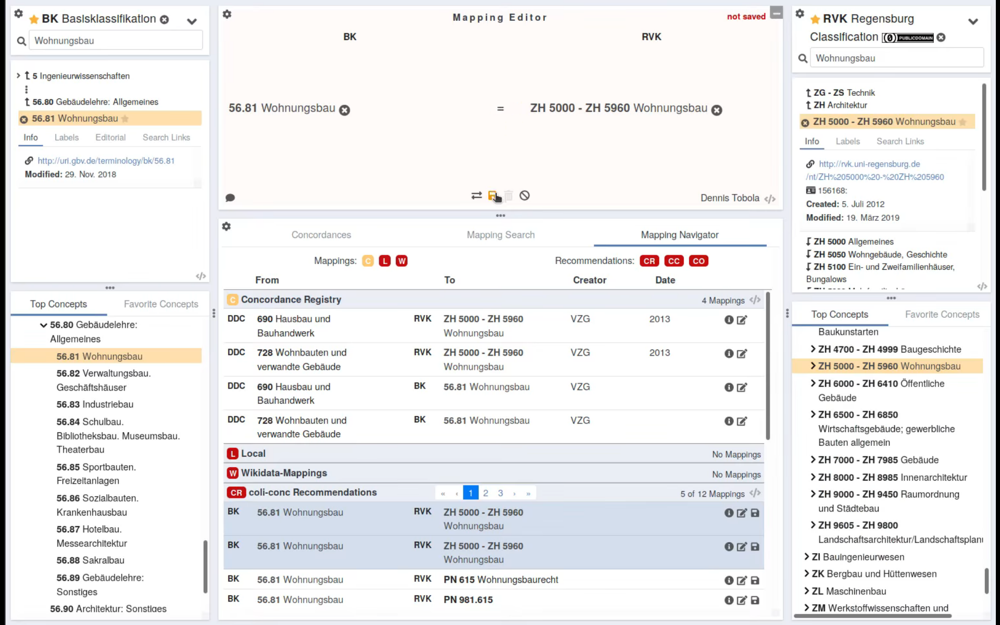

Integration externer Normdatenquellen für Abgleich und Anreicherung lokaler Daten in OpenRefine
Fabian Steeg & Adrian Pohl,
Offene Infrastruktur, hbz NRW

Präsentation im Rahmen des Kolloquiums der Professur Wirtschafts- und Sozialgeschichte am Institut für Geschichte, Martin-Luther-Universität Halle-Wittenberg, 2022-03-28
Diese Präsentation:
http://slides.lobid.org/2022-halle-reconcile/


Hochschulbibliothekszentrum des Landes Nordrhein-Westfalen, seit 1973
Dienstleistungs- und Entwicklungseinrichtung für digitale Services in Hochschulbibliotheken
Einige Arbeitsbereiche: Verbundkatalog, Suchportal DigiBib, Fernleihe, Konsortiale Erwerbung
Überblick
| Normdaten im Web |
| Datenabgleich und -anreicherung in OpenRefine |
| Standardisierung & W3C Community Group |
| Eigene Daten in OpenRefine verfügbar machen |
| Normdaten im Web |
| Datenabgleich und -anreicherung in OpenRefine |
| Standardisierung & W3C Community Group |
| Eigene Daten in OpenRefine verfügbar machen |
Warum Normdaten?
Ursprüngliches Ziel: normierte Namensformen für Dinge und Personen
Ermöglicht (bereits im Zettelkatalog!) einheitlichen Einstieg in die Literatursuche
Beispiele: Suche nach Literatur von oder über eine bestimmte Person oder zu einem bestimmten Thema anhand eines normierten Namens
Was sind Normdaten? 1/2
Sammlungen von Datensätzen zur eindeutigen Identifizierung von Dingen
Dinge können z.B. sein: Personen, Organisationen, geographische und/oder administrative Einheiten, Themen
ein Normdatensatz besteht mindestens aus: ID, Vorzugsbenennung
oftmals gibt es weitere identifizierende Merkmale, z.B.: alternative Benennungen, Lebensdaten, Orte (Geburts-, Sterbeort, Wirkungsort, Sitz etc.)
Was sind Normdaten? 2/2
Normdatensätze können aufeinander verweisen, z.B. Person --geborenIn--> Ort
...oder auf Einträge zum selben Gegenstand in anderen Datenbanken
Ihre besondere Stärke entfalten Normdaten durch Pflege und Verwendung innerhalb einer überinstitutionellen Gemeinschaft.
Zu diesem Zweck bietet sich die Publikation der Normdaten im Web an.
Wie publiziere ich Normdaten am besten? – Linked Open Usable Data (LOUD)
Einfache Nutzung ermöglichen
Rechercheoberfläche und Browsing: gutes UI/UX für Menschen
Entwickler:innen und Anwendungen: intuitive, offene, standardbasierte APIs
Standards: HTTP, HTML, JSON-LD, Simple Knowledge Organization System (SKOS)
Einfachen Einstieg in die Community ermöglichen
Potentiellen neuen Mitgliedern der Normdaten-Nutzergemeinschaft soll der Einstieg möglichst leicht gemacht werden
Sie bringen Daten mit und wollen diese mit meinen Normdaten verknüpfen/abgleichen
Welche Tools gibt es? Welche Standards und Software für das Angebot einer einfachen Schnittstelle zum Datenabgleich?
| Normdaten im Web |
| Datenabgleich und -anreicherung in OpenRefine |
| Standardisierung & W3C Community Group |
| Eigene Daten in OpenRefine verfügbar machen |
Was ist OpenRefine?
"A powerful tool for working with messy data"
"cleaning it; transforming it from one format into another; and extending it with web services and external data"
Oberfläche wie Tabellenkalkulation
Läuft im Browser
Wo ist OpenRefine?
Lokal, downloaden und installieren:
https://openrefine.org/download.html
Gehostet, z.B. zum Ausprobieren:
http://openrefine.labs.lobid.org
Wofür ist OpenRefine?
Gut geeigent wo UI/Tabellenkalkulation passt
Fachliche Arbeit
Manuelle Optimierung
Überschaubare Datenmengen
Wofür ist OpenRefine (noch) nicht?
Bisher nicht geeignet für große Dateien, aber eine neue Architektur für größere Datenmengen ist fast fertig
Automatisierung ohne UI nicht mit Bordmitteln, aber mit Zusatztool möglich: openrefine-batch
Was ist Reconciliation?
Abgleichen / Matchen eigener Daten (z.B. Namen von Personen) auf Normdateneinträge
Voraussetzung für Datenanreicherung durch Übernahme von Feldern aus gematchten Einträgen
Beispiel: Abgleich mit und Anreicherung aus GND

Abgleich / Reconciliation


Anreicherung
Namen wurden mit GND-IDs assoziiert
Felder der GND-Entitäten stehen so zur Verfügung
Mit diesen können wir unsere lokalen Daten anreichern
d.h. konkret: neue Spalten in unserer Tabelle anlegen


Anreicherung mit Entitäten aus der Normdatenquelle
Angereicherte Felder sind z.T. selbst GND-Entitäten
Sind automatisch abgeglichen / reconciled
Können als Grundlage für weitere Anreicherung dienen


Es gibt verschiedene Möglichkeiten zur Verbesserung der Matchingergebnisse
Verwendung zusätzlicher lokaler Daten


Export
| Normdaten im Web |
| Datenabgleich und -anreicherung in OpenRefine |
| Standardisierung & W3C Community Group |
| Eigene Daten in OpenRefine verfügbar machen |
Standardisierung & W3C Community Group
W3C Entity Reconciliation Community Group
Ziele
Dokumentation und Verbesserung des Protokolls der OpenRefine Reconciliation API
Protokoll als Standard für den Datenabgleich im Web vorantreiben
Werkzeuge rund um das Protokoll bereitstellen
Testbench
Ein Werkzeug zum Testen von Reconciliation-Services
Ein zentrales Verzeichnis verfügbarer Reconciliation-Services (aktuell 38)
Census
Überblick über das Reconciliation-Ökosystem
Verfügbare Services, Clients, Software-Bibliotheken
Andere Clients als OpenRefine
Alma Refine

Cocoda
Specs
Spezifikation des Protokolls für Datenabgleich und -anreicherung
| Normdaten im Web |
| Datenabgleich und -anreicherung in OpenRefine |
| Standardisierung & W3C Community Group |
| Eigene Daten in OpenRefine verfügbar machen |
Eigene Daten in OpenRefine verfügbar machen
1. Einzeldatensätze als JSON anbieten
2. Suche nach Datensätzen implementieren
3. Reconciliation-Protokoll implementieren
Für Details zu 1. und 2. siehe Workshop-Material From LOD to LOUD: building & using JSON-LD APIs
1. Einzeldatensätze als JSON
z.B. http://localhost:9200/loc/work/c000000011/_source
Dann schon nutzbar in OpenRefine: Daten per URL holen
z.B. mit diesen Daten
http://id.loc.gov/resources/works/c000000011
http://id.loc.gov/resources/works/c000000020
http://id.loc.gov/resources/works/c000000026
http://id.loc.gov/resources/works/c000000028
http://id.loc.gov/resources/works/c000000100
ID rauspicken & URL erzeugen, unter der wir JSON finden/selbst anbieten
http://id.loc.gov/resources/works/c000000011 → http://localhost:9200/loc/work/c000000011/_source
"http://localhost:9200/loc/work/" + split(value, '/')[-1] + "/_source"
Das JSON können wir dann zum Anreichern nutzen
2. Suche nach Datensätzen implementieren
z.B. http://localhost:9200/loc/work/_search?q=*
d.h. Indexierung der Daten in Suchmaschine, z.B. Elasticsearch, Solr, Lucene
z.B. mit diesen Daten
Letters from an American farmer
Italian journeys
Report of the trial of George Ryan
The devil upon crutches in England
Educational interests of Colorado
"http://localhost:9200/loc/work/_search?q=\"" + replace(value, " ", "+") + "\""
value.parseJson().hits.hits[0]._source.id
3. Reconciliation-Protokoll implementieren
Mit speziellen Reconciliation-Tools/Frameworks
z.B. skohub-vocabs & skohub-reconcile
Mit generischen Web-Entwicklungs-Tools/Frameworks (JSON API)
Testen mit Testbench
In Testbench abgleichen
Einzel-Abgleich simulieren für "Brandt, Willy" mit Beruf und Affiliation
Zusammenarbeit von Fachebene & Entwicklung
Schon erster Schritt, Bereitstellung von Einzeldaten als JSON kann fachlich in OpenRefine getestet werden
Bis hin zur Evaluation der Scores beim Abgleich mit disambiguierenden lokalen Daten in der Testbench
Ermöglicht auf vielen Ebenen die unmittelbare Zusammenarbeit von Fachebene & Entwicklung